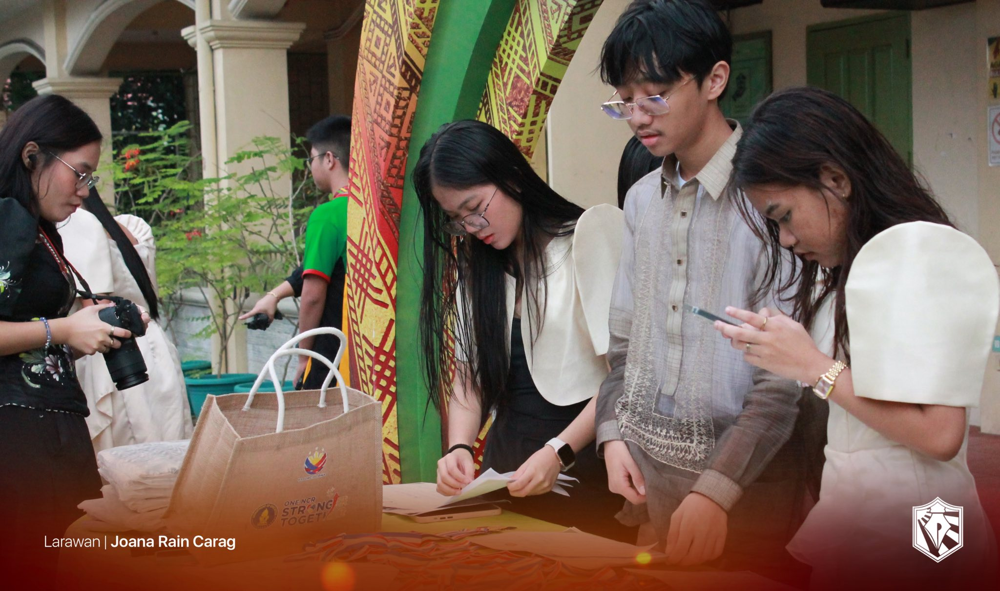
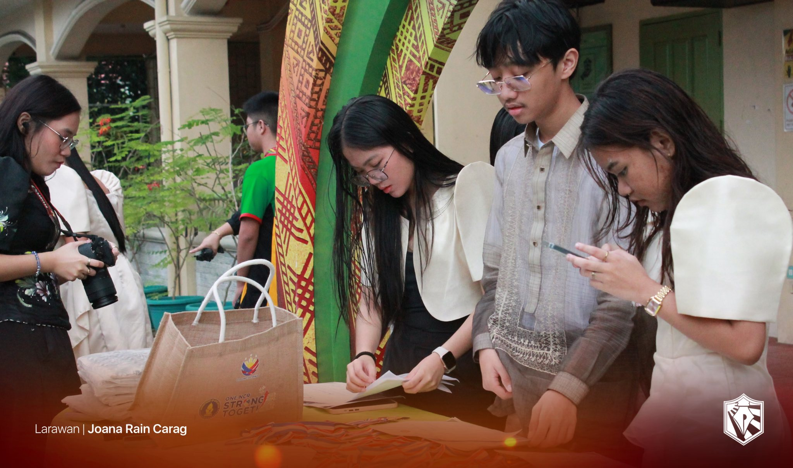

E-Portfolio Araling Panlipunan TLE/ICT Main
࣪ ˖ ⟡˚౨ৎ⋆ TLE/ICT ~ 2nd Quarter ⋆౨ৎ˚⟡˖ ࣪
Lesson 1 - Introduction to CSS
In this lesson, I have been introduced to the Cascading Style Sheets or CSS. Here I learned its structure, benefits, and capabilities. CSS describes how elements are displayed on different forms of media, separating content from deisgn making it organized with aesthetics.
Lesson 2 - Structure & Types of CSS
This lesson taught me the structure of CSS as well as its types or kinds. Its structure consists of a selector, property, value, and declaration. The kinds of CSS are inline, external, and embedded. This lesson also tackled about style sheets and how it functions.
Lesson 3 - Display Elements + < div > & < span > Tags
For this topic, I learned about display properties, its kinds and importance. I also learned about the < div > and < span > tags along with its attribute.
Here are sample browser outputs with each topic!!
Inline Style Sheets
External Style Sheets
Embedded Style Sheets
Display Property: Block
Display Property: Inline
No Display Property
Inline Display Property
Block Display Property
Div Tag
Span Tag
Lesson 4 - CSS Rule, Classes, & Class Selector
This topic discusses about CSS rules, style properties, classes, and class selectors. Here, I learned how to format the different kinds of CSS and how to apply a style rule to specific HTML tags.
Here are sample browser outputs with each topic!!
Class 1
Class 2
Class Selector [Embedded]
Selector 1 [External]
Selector 2 [External]
Lesson 5 - CSS Selectors
This lesson focuses on CSS selectors and when to use it. I learned that the different type of selectors are Class selector, Element selector or Tag selector, ID selector, Universal selector, Group selector, and Attribute selector.
Here are sample browser outputs with each topic!!
Element Selector
ID Selector
Universal Selector
Group Selector
Attribute Selector
Lesson 6 - Setting Dimensions + Pseudo-Classes & Links
This lesson talks about setting dimensions, pseudo class and links, and their properties. In setting dimensions, I learned that the dimensions CSS manages are visibility, width or height of HTML elements. In pseudo-classes and links, I learned that the anchor element has 4 pseudo-classes being link, visited, hover and active.
Here are sample browser outputs with each topic!!
Height & Visibility
Width & Visibility
Width & Visibility
Pseudo-Classes
࣪ ˖ ⟡˚౨ৎ⋆ Events this Quarter ⋆౨ৎ˚⟡˖ ࣪
── .✦ Buwan ng Wika ✦. ──
This Buwan ng Wika reminded me of the importance of appreciating my culture. I can apply what I learned by speaking Filipino more often and by supporting events that promote our culture. I actively participated in this month by wearing our cultural attire every monday of the month. If I were to teach this topic to a classmate, I would explain that Buwan ng Wika is about honoring the Filipino cultures and traditions and keeping it alive. It is important to have this event because it strengthens our love for our country and reminds us of our identity as Filipinos.
── .✦ Intramurals ✦. ──
The most important thing I learned is the value of teamwork, unity, and good sportmanship. I can apply this by cooperating with others in school activities and by maintaining a positive attitude when things go unexpected .I actively participated by joining tug-o-war and the sack race and by watching almost every game to show my support. If I were to teach this topic, I’d explain that the intramurals teaches discipline, respect, and teamwork through sports. It’s important to have this event because it builds friendship, school spirit, and healthy competition.
── .✦ Science Month ✦. ──
This Science month, I learned is that science is not just about facts but about discovering and solving problems. I can apply this by being curious and observing how Science works around me. To be honest, I did not actively participate during this Science month. If I were to teach this topic to someone I know, I would explain that Science month helps us appreciate how Science improves our world. This event is important because it encourages students to think critically and develop problem-solving skills.
── .✦ AP Month ✦. ──
The most important thing I learned is to respect our history and learn from it. I can apply this by being aware of current issues and acting responsibly as a citizen. If I will be honest, I did not participate actively this AP month. If I were to teach this topic, I would explain that AP Month reminds us of our roots and teaches us to value our culture. It’s important to have this event because it builds nationalism and helps students understand their role in society.
── .✦ Teacher's Day ✦. ──
Teacher’s Day was a wonderful day of celebrating and showing our appreciation to our hard-working and caring teachers. It reminded to always appreciate them because of how much effort they give to teach and guide us every day. I can apply what I learned by always respecting my teachers. I participated actively this teacher's day by helping my classmates make gifts for our teachers. If I were to teach someone about this topic, I would explain that teacher’s day celebrates the people who helps us shape our knowledge and character. It’s important to have this event because teachers deserve recognition for their sacrifices and hard work.
── .✦ Cluster Meet ✦. ──
The Cluster Meet was an exciting event where students from different schools gathered to compete and showcase their talents. It was wonderful to see everyone give their best while portraying sportsmanship and unity. I felt proud to see my classmates and school mates represent our school and cheer for them. Similar to the intramurals, this experience reminded me of the importance of good sportmanship. This event has truly strengthened our bond as a school once again.
 

Credits for Videos & Pictures:
- LpSci Standard Press
-Ang Paham
-Bela Paguigan [9 - Faith]
-Allison Pineda [9 - Family]
-9 - Fidelity